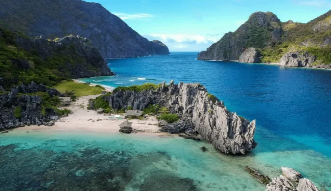

- Culture: The Philippines has a diverse culture influenced
by a blend of indigenous, Spanish, and American traditions.
Filipino culture is known for its
warmth, hospitality, and strong family ties.
- Customs: Respect for elders is a key aspect of
Filipino customs, and the "Mano po" gesture,
where younger individuals show respect to their elders
by taking the elder's hand and bringing it to their forehead,
is a common practice. Festivals like Sinulog and Ati-Atihan
showcase vibrant costumes, dance, and music.
- Food: Filipino cuisine is a flavorful mix of
indigenous, Spanish, Chinese, and American influences.
Adobo (marinated meat), sinigang (sour soup), lechon (roast pig),
and halo-halo (a mixed dessert) are popular dishes.
Rice is a staple in Filipino meals.
- Bayanihan Spirit: The concept of "Bayanihan" reflects
the Filipino spirit of communal unity and cooperation.
It often involves neighbors coming together to help
someone in need, such as moving a house.
- Religious Celebrations: The Philippines is predominantly Catholic,
and religious celebrations like Semana Santa
(Holy Week) are significant nationwide events.
Colorful processions and reenactments of the
Passion of Christ are common during this time.
- DFiesta Culture: Every town in the Philippines has its
own annual fiesta, celebrating its patron saint.
These festivals feature lively parades,
street dances, and various cultural events.
|  |